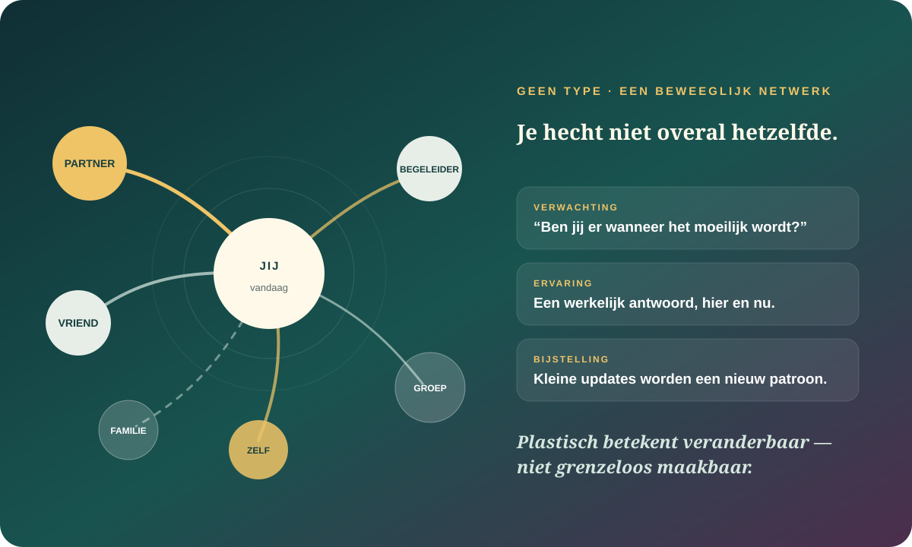

De kern in gewone taal
Je bent niet je hechtingsverleden.
Hechting gaat over verwachtingen die actief worden wanneer nabijheid, verlies, afwijzing of afhankelijkheid ertoe doen. Die verwachtingen kunnen oud zijn, maar ze zijn geen afgesloten vonnis. Ze verschillen per relatie, reageren op wat er nu gebeurt en kunnen door herhaalde ervaringen verschuiven.
Onderzoekers meten volwassen hechting meestal langs graduele dimensies zoals angst en vermijding, niet als vier harde mensensoorten.
Opvoeding kan meewegen, naast temperament, latere relaties, verlies, steun, cultuur en levensomstandigheden.
Patronen kunnen bewegen, maar meestal door voldoende krachtige of herhaalde ervaringen — niet door één inzicht of wilskracht.
“Ik bén vermijdend” maakt een beweging tot een identiteit.
Online hechtingstaal deelt mensen graag op in veilig, angstig, vermijdend of gedesorganiseerd. Die woorden kunnen herkenning geven, maar ze doen al snel alsof ergens onder je huid een vast relatietype zit. In hedendaags onderzoek naar volwassenen worden hechtingspatronen vaak dimensioneel bekeken.
Je kunt beide bewegingen kennen, geen van beide sterk vertonen of anders reageren bij een partner, vriend, ouder of hulpverlener. Een vragenlijst vat antwoorden op dat moment samen; ze ontdekt niet wie jij “werkelijk” bent.
Hechting is een levend voorspellingssysteem.
Een bruikbare moderne lezing van “interne werkmodellen” is: je brein en lichaam bereiden zich voor op wat nabijheid vermoedelijk zal kosten of opleveren. Onder druk kan zo’n verwachting sneller spreken dan bewuste redenering.
Er staat iets op het spel
Iemand wordt stil, komt dichterbij, trekt weg of heeft jou nodig.
Je systeem voorspelt
“Ik word verlaten”, “ik raak mezelf kwijt” of juist “we kunnen dit dragen”.
Je beschermt
Je zoekt, test, bevriest, pleast, controleert, sluit af of vraagt helder om contact.
De ander antwoordt
Dat antwoord kan de verwachting bevestigen, ingewikkelder maken of een kleine foutmelding geven.
Een hechtingspatroon is geen karakterfout. Het is een voorspelling die ooit ergens betekenis kreeg — en vandaag opnieuw getoetst kan worden.
Het verleden trekt. Het bestuurt niet alleen.
Onderzoek vindt gemiddelde continuïteit: sommige verwachtingen keren terug. Tegelijk veranderen mensen door de levensloop en verschillen die veranderingen sterk per persoon. In een studie met meer dan vierduizend volwassenen gingen levensgebeurtenissen samen met verschuivingen; gemiddeld bewogen veel mensen later deels terug naar hun eerdere traject, terwijl anderen duurzamer veiliger of onveiliger werden.
Hechting is niet volledig vast
Meta-analyses en longitudinale studies passen niet bij het idee dat één vroege relatie jouw volledige volwassen patroon vastlegt.
Verandering is niet automatisch blijvend
Een nieuwe liefde, breuk of inzicht kan tijdelijk veel bewegen. Duurzame verandering vraagt vaak consistentie, betekenis en tijd.
Plasticiteit is geen onbeperkte vrijheid
Actuele onveiligheid, armoede, discriminatie, ziekte, afhankelijkheid en de keuzes van anderen begrenzen wat iemand relationeel kan oefenen.
Je hebt niet één hechtingsstijl. Je hebt een landschap.

Longitudinaal onderzoek laat zien dat globale en relatiespecifieke werkmodellen tegelijk kunnen veranderen. Iemand kan steun vertrouwen bij vrienden en toch alarm voelen in romantische nabijheid. Een veilige band hoeft dus niet te wachten tot je hele binnenwereld eerst “genezen” is.
Ze ontstaat ook tussen mensen: in voorspelbaarheid, responsiviteit, herstel na botsingen, respect voor grenzen en ruimte om te exploreren. Geen partner kan jou repareren — maar relaties kunnen wel nieuwe gegevens leveren.
Niet iedere veilige relatie ziet er westers uit.
Hechtingsonderzoek ontstond grotendeels rond westerse ideeën over het autonome kind en één primaire verzorger. Hedendaagse cultuurpsychologen en antropologen tonen waarom dat te smal kan zijn. Zorg kan verdeeld worden over grootouders, broers, zussen, buren en gemeenschap. Responsiviteit kan via oogcontact en woorden lopen, maar ook via lichamelijke nabijheid, ritme, praktische zorg of snel ingrijpen zonder dat een kind expliciet vraagt.
Judi Mesman
Universaliteit zonder uniformiteit
De behoefte aan passende respons kan breed menselijk zijn terwijl de vorm daarvan cultureel sterk verschilt.
Heidi Keller
Wie bepaalt wat “goede” nabijheid is?
Meetinstrumenten kunnen westerse middenklassewaarden als universele norm vermommen en andere zorgpraktijken verkeerd lezen.
Netwerkonderzoek
Eén moeder is niet de hele sociale wereld
Kinderen en volwassenen kunnen veiligheid ontlenen aan meerdere relaties die verschillende functies dragen.
Structurele context
Afwezigheid is niet altijd onverschilligheid
Werkuren, migratie, woningnood, oorlog, racisme en ontoegankelijke zorg beïnvloeden hoeveel nabijheid praktisch mogelijk is.
Twee oude bewegingen kunnen tegelijk in je leven wonen.
Een patroon verandert wanneer de werkelijkheid vaak genoeg anders antwoordt.
Kortdurend herinnerd worden aan veilige relaties heeft in onderzoek gemiddeld positieve effecten op gevoel, denken en gedrag, al is er gemengd bewijs voor publicatievertekening. Dat is veelbelovend, maar een tijdelijke “security prime” is nog geen herschreven levenspatroon.
Geen relationele dwang: “Je moet blijven om veiliger te leren hechten” is gevaarlijke onzin wanneer er geweld, manipulatie, vernedering of controle speelt. Soms is afstand nemen juist de meest veilige update.
Acht hedendaagse stemmen die hechting opnieuw in beweging brengen.
R. Chris Fraley
Hoe stabiel is een patroon werkelijk?
Onderzoekt volwassen hechting als dimensies en volgt hoe levensgebeurtenissen zowel tijdelijke als duurzamere verandering kunnen brengen.
Keely Dugan & Omri Gillath
Kunnen verschillende relaties elkaar herschrijven?
Hun netwerkonderzoek volgt globale én relatiespecifieke verwachtingen over tijd.
Paula Pietromonaco & Nickola Overall
Wat doen partners met elkaars onzekerheid?
Bestuderen buffering, escalatie en spillover als dynamiek tussen mensen, niet alleen als eigenschap in één persoon.
Ximena Arriaga & TeKisha Rice
Wanneer wordt responsiviteit nieuwe informatie?
Onderzoeken hoe begrip, validatie en zorg samenhangen met meer veiligheid binnen een concrete relatie.
Judi Mesman
Kan iets universeel zijn zonder er overal hetzelfde uit te zien?
Verbindt hechtingsonderzoek met culturele variatie en meerdere vormen van sensitieve zorg.
Heidi Keller
Welke cultuur zit verstopt in onze meetlat?
Daagt individualistische en moedergerichte aannames uit en bewaakt de ethische gevolgen van één norm.
Ross Thompson, Jeffry Simpson & Lisa Berlin
Waarover bestaat werkelijk consensus?
Brachten meer dan 75 onderzoekers samen en maakten zowel overeenstemming als fundamentele open vragen zichtbaar.
James Coan
Waarom voelt alleen dragen zwaarder?
Social Baseline Theory ziet nabijheid en gedeelde last als deel van de menselijke uitgangssituatie, niet als luxe bovenop autonomie.
Zoek niet naar je type. Zoek naar het verschil tussen relaties.
- 1Kies drie verschillende mensen.
Bijvoorbeeld een partner, vriend en familielid. Kies alleen relaties die veilig genoeg voelen om te onderzoeken.
- 2Maak de zin af.
“Wanneer ik jou nodig heb, verwacht een deel van mij dat…” Schrijf per persoon één concreet antwoord.
- 3Noteer je bescherming.
Ga je zoeken, pleasen, testen, bevriezen, afsluiten, rationaliseren of rechtstreeks vragen?
- 4Zoek tegenbewijs.
Wanneer antwoordde deze persoon anders dan je voorspelling? Laat één uitzondering bestaan zonder je hele geschiedenis te ontkennen.
- 5Kies één kleine update.
Een duidelijke vraag, een grens, steun aannemen of iets eerder benoemen. Geen groot gesprek dat onveilig voelt.
“Bij wie word ik een andere versie van mezelf — en wat gebeurt er tussen ons waardoor dat mogelijk wordt?”
Wanneer theorie te klein wordt
Niet ieder relationeel probleem is jouw hechtingspatroon.
Geweld, dwang, stalking, vernedering, financiële controle en structurele afhankelijkheid vragen veiligheid en passende hulp — geen zelfdiagnose als “angstig gehecht”. Ook aanhoudende paniek, dissociatie of ernstig vastlopen kan professionele ondersteuning verdienen. Het dossier stelt geen diagnose en vervangt geen hulp.
Waarop dit dossier steunt.
- Overzicht · 2019Fraley — Attachment in Adulthood
Hedendaags overzicht van continuïteit, verandering, relaties en open debatten in volwassen hechting.
- Longitudinaal · 2021Fraley, Gillath & Deboeck — Do life events lead to enduring changes?
Meer dan vierduizend volwassenen gevolgd rond levensgebeurtenissen, met tijdelijke én individuele duurzame verandering.
- Longitudinaal · 2022Dugan et al. — Global and relationship-specific working models
Laat zien hoe veranderingen binnen specifieke relaties samenhangen met globale hechtingsverwachtingen.
- Meta-analyse · 2022Gillath et al. — Attachment Security Priming
120 studies naar kortdurende activatie van veiligheid, met positieve gemiddelde effecten en gemengde signalen rond publicatiebias.
- Relatieonderzoek · 2020Rice, Kumashiro & Arriaga — Perceived Partner Responsiveness
Responsiviteit en meer veiligheid binnen concrete partnerrelaties.
- Overzicht · 2022Overall et al. — Buffering and spillover
Hoe partners hechtingsonzekerheid kunnen dempen, versterken of doorgeven binnen koppels en gezinnen.
- Veldconsensus · 2022Thompson, Simpson & Berlin — Nine fundamental questions
Synthese van bijdragen door meer dan 75 onderzoekers, inclusief consensus, onenigheid en open vragen.
- Meta-analyse · 2021Opie et al. — Early attachment stability and change
Stabiliteit en verandering in vroege kindertijd; geen eenvoudig levenslang vaststaand patroon.
- Cultureel overzicht · 2018Mesman et al. — Universality Without Uniformity
Cultureel inclusieve benadering van sensitieve responsiviteit met voorbeelden buiten westerse middenklassegezinnen.
- Culturele kritiek · 2018Keller — Universality claim of attachment theory
Kritiek op uniforme, individualistische normen en de ethische gevolgen daarvan.
- Netwerkperspectief · 2021Thompson — Attachment networks and the future of attachment theory
Toekomstvragen rond meerdere hechtingsrelaties en hun onderlinge invloed.
- Sociaal-neurowetenschappelijk model · 2020Beckes & Coan — Social Baseline Theory
Nabijheid en gedeelde last als menselijke uitgangssituatie; een model, geen totaalverklaring van hechting.
- Meta-analyse · 2022Zhang et al. — Adult attachment and mental health
Associaties over 224 studies; samenhang betekent geen diagnose en geen bewijs van één oorzaak.
Lees ook ons bronnenbeleid en het redactionele kompas van de Atlas.